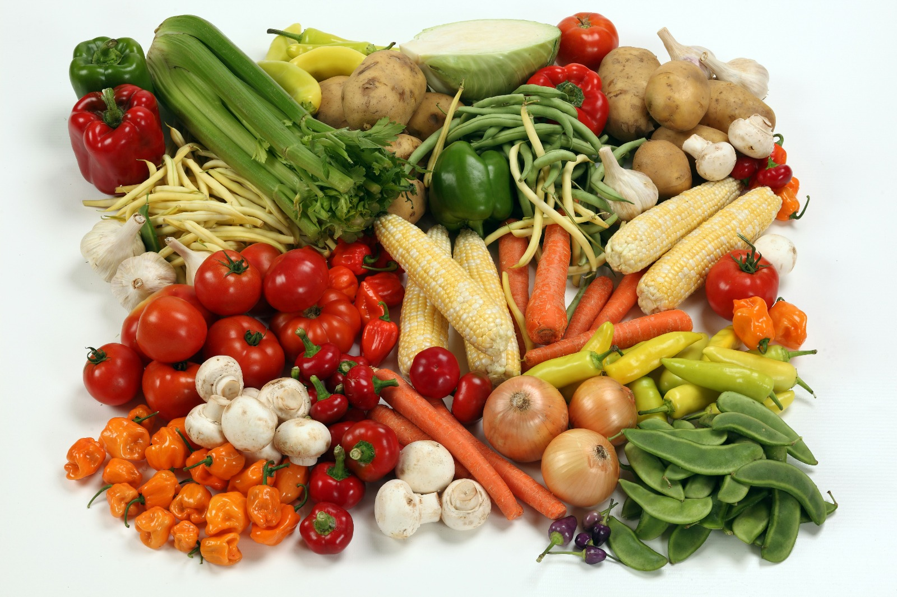

5 Langkah Memulai Pola Makan Sehat Tanpa Diet Menyiksa
Banyak orang mengira bahwa memulai hidup sehat harus memotong drastis asupan kalori dan menahan rasa lapar berjam-jam. Faktanya, pendekatan ekstrem seperti itu sangat sulit dipertahankan dalam jangka panjang dan sering kali memicu efek yo-yo diet yang justru mengacaukan metabolisme tubuh Anda.
1. Terapkan Prinsip Piring Sehat
Cobalah membagi piring makan Anda dengan rasio ideal: 50% diisi sayuran segar dan buah-buahan kaya serat, 25% protein berkualitas (seperti ikan laut, dada ayam, tahu, atau tempe), dan 25% karbohidrat kompleks (nasi merah, ubi jalar, kentang kukus, atau oatmeal).
2. Jangan Pernah Lewatkan Sarapan Bergizi
Sarapan dengan paduan protein dan serat membantu menstabilkan kadar gula darah sejak pagi, mencegah lonjakan hormon insulin berlebih, serta secara efektif menekan dorongan mengonsumsi camilan manis berlebihan di siang hari.
3. Cukupi Kebutuhan Air Sebelum Makan
Otak manusia sering kali keliru menerjemahkan sinyal dehidrasi ringan sebagai rasa lapar. Membiasakan diri minum segelas air putih hangat 15 menit sebelum jam makan utama terbukti melancarkan sekresi enzim pencernaan dan membantu mengontrol porsi makan secara alami.
4. Gunakan Aturan Fleksibilitas 80/20
Hidup sehat bukan dimaknai tanpa tekanan psikologis. Jadikan 80% dari apa yang Anda konsumsi adalah makanan utuh alami padat nutrisi, dan sisakan 20% ruang untuk menikmati hidangan favorit keluarga tanpa rasa bersalah.
5. Pantau Asupan dengan Santai Lewat Wellora
Melalui fitur pencatatan pintar di aplikasi Wellora, Anda dapat memantau komposisi nutrisi harian secara praktis. Konsistensi kecil yang dilakukan setiap hari akan membawa transformasi besar dan langgeng bagi kesehatan tubuh Anda!